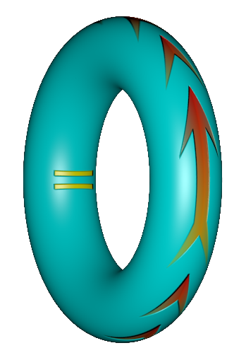

|  | Unïnfo – The Theory of Universal Information |
“Unïnfo” is pronounced “uni-info” /ˈjuːnɪˌɪnfə/, where ‘ï’ is the shorthand for the “double i” (ii) and pronounced just like in “naïve” /naɪˈiːv/.
Contents:
- The metaphysical theory of Unïnfo [𝕄]
- The Trinion (\(\Trinion\)): The union of the three basic components Circle - Arrow - Equal, with the correspondent three basic postulates and the intrinsics unifying them together
- The FoC: The Trinion as a subject with three components Form - Operator - Content
- The CIE (Ψ): The subjective and quantitative view of the Universe as Content - Intent - Extent and their three partitions
- The sCIfEr (∅): The fabric of the Universe woven by the interleaving between object and subject
- Exp: The eigenvector of differential-integral calculus
- Unitorus: The symbol of Unïnfo
- Twisted Double i: The “ï” of “Unïnfo”
- Unithread Theory [Ʊ]
- Knowledge Theory [𝕂]
- uninet [ᔕ]